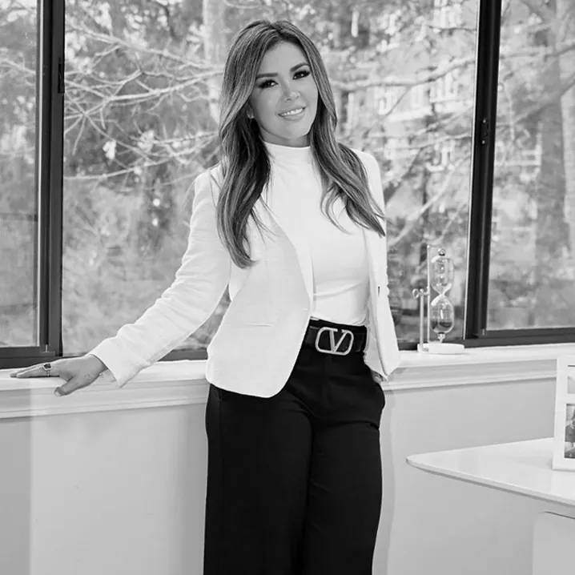

Inspire the world with the power of collective commitment to foster positive change
Our main goal is to strengthen foundations to drive positive change in communities.

A fundamental pillar for foundations
To inspire the world with the power of collective commitment to encourage positive change in our community. We seek to raise awareness of the strengths that come from coming together to support the building of a better world.
We are committed to being a fundamental pillar for foundations, strengthening them and enhancing their results. Our mission is to serve as a connection between benefactors and foundations, contributing positively to their purposes.
How do we help generate positive change?
Our main objective is to strengthen foundations to drive positive change in communities. We achieve this through projects based on three pillars.
Creating awareness
Of social responsibility in the community.
Create connections
To generate economic, material and human resources.
Continuous training
For NGOs in areas of opportunity.
The people behind the work
Founders, directors and volunteers committed to connecting and inspiring projects that drive positive change. Select a person to read their story.

Marykar Garcia
President & Marketing · Founder & Board Member Read bio
Daysi Jacobson
Vice President & Finance · Founder & Board Member Read bio
Patricia Tusanotte
Director of Administration & Volunteering · Volunteer Read bio
Vanezza Reyes
Director of Strategic Planning · Volunteer Read bio
Claudia Farfan
Director of Sponsors & Donors · Volunteer Read bioAmbassadors

Jackie Bunuelos
Ambassador
Daysi Jacobson
AmbassadorMake the world a better place
We are a non-profit organization that focuses on strengthening foundations that work under these 6 social objectives.
Donate now- 01Health and wellnessBecause health is fundamental.
- 02Gender equityEveryone deserves equal opportunities.
- 03Job developmentBoosting the economy one individual at a time.
- 04Reducing inequalitiesWe believe in building bridges to close gaps between communities.
- 05Partnerships to achieve goalsWe believe in collaboration.
- 06EducationWe believe in the transformative power of education to build a brighter and more equitable future.

Connect with us to create the change we desire
If you know of a foundation that shares our passion for change and collaboration… contact us! Together we can make an even greater impact.